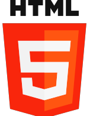
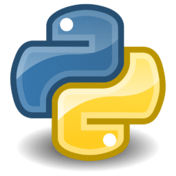

 HTML5 (Hypertext Markup Language, versão 5)
é uma linguagem de marcação para a World Wide Web e é uma tecnologia chave da Internet, originalmente
proposto por Opera Software. É a quinta versão da linguagem HTML. Esta nova versão traz consigo
importantes mudanças quanto ao papel do HTML no mundo da Web, através de novas funcionalidades como
semântica e acessibilidade. Possibilita o uso de novos recursos antes possíveis apenas com a aplicação
de outras tecnologias. Sua essência tem sido melhorar a linguagem com o suporte para as mais recentes
multimídias, enquanto a mantém facilmente legível por seres humanos e consistentemente compreendida por
computadores e outros dispositivos (navegadores, parsers etc). O HTML5 será o novo padrão para HTML,
XHTML, e HTML DOM. Atualmente, está em fase de esboço, porém diversos navegadores já implementam algumas
de suas funcionalidades.
Após seus predecessores imediatos HTML 4.01 e XHTML 1.1, HTML5 é uma resposta à observação de que o HTML
e o XHTML, de uso comum na World Wide Web, é uma mistura de características introduzidas por várias
especificações, juntamente com aquelas introduzidas por software, tais como os navegadores, aqueles
estabelecidos pela prática comum, e os muitos erros de sintaxe em documentos existentes na web. É,
também, uma tentativa de definir uma única linguagem simples de marcação que possa ser escrita em HTML
ou em sintaxe XHTML. Isso inclui modelos de processamento detalhados para incentivar implementações mais
interoperáveis; isso estende, melhora e racionaliza a marcação disponível para documentos, e introduz
marcações e interfaces de programação de aplicações (APIs) para aplicações web complexas. Pelas mesmas
razões, HTML5 também é um candidato em potencial aplicações multi-plataforma móveis. Muitos recursos do
HTML5 tem sido construídos com a consideração de ser capaz de executar em dispositivos de baixa potência
como smartphones e tablets.
Em particular, HTML5 adiciona várias novas funções sintáticas. Elas incluem as tags de video, audio,
header e elementos canvas, assim como a integração de conteúdos SVG que substituem o uso de tags object
genéricas. Estas funções são projetadas para tornar mais fácil a inclusão e a manipulação de conteúdo
gráfico e multimídia na web sem ter de recorrer a plugins proprietários e APIs. Outros novos elementos,
como section, article, header e nav, são projetados para enriquecer o conteúdo semântico dos documentos.
Novos atributos têm sido introduzidos com o mesmo propósito, enquanto alguns elementos e atributos têm
sido removidos. Alguns elementos, como a, cite e menu têm sido mudados, redefinidos ou padronizados. As
APIs e os modelos de objetos de documentos (DOM) não são mais pensamentos retrógrados, mas são partes
fundamentais da especificação do HTML5. HTML5 também define com algum detalhe o processamento necessário
para que erros de sintaxe de documentos inválidos sejam tratados uniformemente por todos os browsers e
outros agentes de usuários em conformidade com o HTML5.
História
O Web Hypertext Application Technology Working Group (WHATWG) iniciou o trabalho do novo padrão HTML em
2004, quando o World Wide Web Consortium (W3C) estava se concentrando no futuro desenvolvimento do XHTML
2.0, e o HTML 4.01 não tinha sido atualizado desde 2001. Em 2009, o W3C decidiu que o Grupo de Trabalho
do XHTML 2.0 deveria parar seus trabalhos, e assim, descontinuar o padrão. Desta forma o W3C e o WHATWG
passaram a trabalhar juntas no desenvolvimento do HTML5.
O projeto do HTML5 foi bem recebido pelos desenvolvedores Web até então, e tornou-se tema na mídia em
abril de 2010 depois que o CEO da Apple Inc., Steve Jobs emitiu uma carta pública intitulada "Reflexões
sobre o Adobe Flash", onde ele conclui que o desenvolvimento do HTML5 tornaria o Adobe Flash
desnecessário, tanto para assistir vídeo ou mesmo exibir qualquer conteúdo web. Isso provocou um debate
entre os desenvolvedores Web, onde muitos sugeriram que, enquanto o HTML5 proporcionasse uma melhor
funcionalidade, a variedade de browsers existentes exibiria páginas diferentes, tendo um resultado
diferente em cada navegador e não se conseguiria de fato chegar a um padrão. No início de novembro de
2011 a Adobe anunciou que iria interromper o desenvolvimento de Flash para dispositivos móveis e
redirecionar seus esforços para o desenvolvimento de ferramentas utilizando HTML5.
Descrição
No início de 2008 o W3C – consórcio de empresas de tecnologia que coordena os padrões da internet quanto
a linguagem – anunciou a primeira especificação do HTML5. O HTML, que é responsável por organizar e
formatar as páginas que visitamos na Internet, está em sua versão 4.0.1 e continua evoluindo. Após cinco
anos de trabalho, desde 2008 está em fase de esboço, enquanto a versão final está prevista para 2014.
Foram feitas grandes alterações, que incluem:
novas API’s, entre elas uma para desenvolvimento de gráficos bidimensionais
Controle embutido de conteúdo multimídia
Aprimoramento do uso offline
Melhoria na depuração de erros
Esta evolução da linguagem padrão para web pode eliminar a necessidade de plug-ins para aplicações
multimídia em navegadores. Diversos críticos consideram a tecnologia como um forte concorrente ao Flash,
da Adobe, ao Silverlight, da Microsoft, e ao recente JavaFX, da Sun (Oracle). Recentemente, Shantanu
Narayen, diretor executivo da Adobe, disse que o Flash não iria perder mercado, porém a versão 5 do HTML
já está sendo chamada de "Flash-killer" (Assassino do Flash). Estas tecnologias precisarão se adaptar
rapidamente para conseguir manter-se no mercado, tão populares quanto hoje. Na avaliação do co-diretor
de ferramentas da Mozilla, Ben Galbraith, as tecnologias viabilizadas pelo HTML5 como o Canvas para
desenhos 2D e o armazenamento de conteúdos no desktop, permitirão que "usemos mais o browser do que
nunca".
Após dez anos sem atualizações, a forma como se escreve páginas na internet passa por uma boa
transformação. O HTML5 oferece uma experiência web totalmente diferente para usuários e embora exista um
longo caminho para ser finalizado, muitos navegadores importantes, como Internet Explorer 9, Opera,
Safari 4, Firefox 3.6 e Chrome já implementaram grandes partes da linguagem, incluindo tags de vídeo e
suporte à tecnologia Canvas. Com a evolução da linguagem, os navegadores passam da categoria
"mostradores" de páginas para um renderizador de "web software".
Assim como surgiram as app stores para aplicações nativas, existem appstores especificas para aplicações
HTML5, os desenvolvedores podem utilizar a audiência das appstores para distribuir seu aplicativo e
também fazer cobrança (as appstores oferecem integrações para permitir a cobrança). Como, por exemplo, a
Zeewe, loja de apps HTML5 focada em smartphones.
PHP
Versão atual da linguagem PHP
PHP (um acrônimo recursivo para "PHP: Hypertext
Preprocessor", originalmente Personal Home Page) é uma linguagem interpretada livre, usada originalmente
apenas para o desenvolvimento de aplicações presentes e atuantes no lado do servidor, capazes de gerar
conteúdo dinâmico na World Wide Web. Figura entre as primeiras linguagens passíveis de inserção em
documentos HTML, dispensando em muitos casos o uso de arquivos externos para eventuais processamentos de
dados. O código é interpretado no lado do servidor pelo módulo PHP, que também gera a página web a ser
visualizada no lado do cliente. A linguagem evoluiu, passou a oferecer funcionalidades em linha de
comando, e além disso, ganhou características adicionais, que possibilitaram usos adicionais do PHP, não
relacionados a web sites. É possível instalar o PHP na maioria dos sistemas operacionais, gratuitamente.
Concorrente direto da tecnologia ASP pertencente à Microsoft, o PHP é utilizado em aplicações como o
MediaWiki, Facebook, Drupal, Joomla!, WordPress, Magento e o Oscommerce. Criado por Rasmus Lerdorf em
1995, o PHP tem a produção de sua implementação principal, referência formal da linguagem, mantida por
uma organização chamada The PHP Group. O PHP é software livre, licenciado sob a PHP License, uma licença
incompatível com a GNU General Public License (GPL) devido a restrições no uso do termo PHP.
História
A linguagem foi criada em 1994 e o código fonte do PHP só foi liberado em 1995, como um pacote de
programas CGI criados por Rasmus Lerdorf, com o nome Personal Home Page Tools, para substituir um
conjunto de scripts Perl que ele usava no desenvolvimento de sua página pessoal. Em 1997 foi lançado o
novo pacote da linguagem com o nome de PHP/FI, trazendo a ferramenta Forms Interpreter, um interpretador
de comandos SQL. Mais tarde, Zeev Suraski desenvolveu o analisador do PHP 3 que contava com o primeiro
recurso de orientação a objetos, que dava poder de alcançar alguns pacotes, tinha herança e dava aos
desenvolvedores somente a possibilidade de implementar propriedades e métodos.Pouco depois, Zeev e Andi
Gutmans, escreveram o PHP 4, abandonando por completo o PHP 3, dando mais poder à máquina da linguagem e
maior número de recursos de orientação a objetos. O problema sério que apresentou o PHP 4 foi a criação
de cópias de objetos, pois a linguagem ainda não trabalhava com apontadores ou handlers, como são as
linguagens Java, Ruby e outras. O problema fora resolvido na versão 5 do PHP, que já trabalha com
handlers. Caso se copie um objeto, na verdade copiaremos um apontador, pois, caso haja alguma mudança na
versão original do objeto, todas as outras também sofrem a alteração, o que não acontecia na PHP 4.
Trata-se de uma linguagem extremamente modularizada, o que a torna ideal para instalação e uso em
servidores web. Diversos módulos são criados no repositório de extensões PECL (PHP Extension Community
Library) e alguns destes módulos são introduzidos como padrão em novas versões da linguagem. É muito
parecida, em tipos de dados, sintaxe e mesmo funções, com a linguagem C e com a C++. Pode ser,
dependendo da configuração do servidor, embarcada no código HTML. Existem versões do PHP disponíveis
para os seguintes sistemas operacionais: Windows, Linux, FreeBSD, Mac OS, OS/2, AS/400, Novell Netware,
RISC OS, AIX, IRIX e Solaris.
Construir uma página dinâmica baseada em bases de dados é simples com PHP, (em parte, vale lembrar), este
provê suporte a um grande número de bases de dados: Oracle, Sybase, PostgreSQL, InterBase, MySQL,
SQLite, MSSQL, Firebird, etc., podendo abstrair o banco com a biblioteca ADOdb, entre outras. A
Wikipédia funciona sobre um software inteiramente escrito em PHP, usando bases de dados MySQL: o
MediaWiki.
PHP tem suporte aos protocolos: IMAP, SNMP, NNTP, POP3, HTTP, LDAP, XML-RPC, SOAP. É possível abrir
sockets e interagir com outros protocolos. E as bibliotecas de terceiros expandem ainda mais estas
funcionalidades. Existem iniciativas para utilizar o PHP como linguagem de programação de sistemas
fixos. A mais notável é a PHP-GTK. Trata-se de um conjunto do PHP com a biblioteca GTK, portada do C++,
fazendo assim softwares inter-operacionais entre Windows e Linux. Na prática, essa extensão tem sido
muito pouco utilizada para projetos reais.
O acrônimo recursivo PHP representa um elefante, que é conhecido como o mascote da linguagem.
Licença
PHP é um software gratuito e de código aberto disponível sob a PHP License, que afirma:
Produtos derivados deste software não devem ser chamado de PHP, nem pode conter "PHP" em seu nome, sem
prévia permissão por escrito da group@php.net. Você pode indicar que o software funciona em conjunto com
o PHP, dizendo "Foo para PHP", em vez de chamá-lo "PHP Foo" ou "phpfoo".
Esta restrição no uso do nome PHP torna-o incompatível com a GNU General Public License (GPL).
PHP 6 e Unicode
PHP recebeu diversas críticas por não ter suporte nativo a Unicode. Em 2005, um projeto liderado por
Andrei Zmievski foi iniciado para trazer esse dito suporte ao PHP através da incorporação da biblioteca
International Components for Unicode (ICU) para poder passar-se a usar a codificação UTF-16. Uma vez que
isso causaria grandes mudanças tanto no código fonte como para o usuário, foi planejado lançá-la na
versão 6.0 em conjunto com outros importantes recursos, então em desenvolvimento, em vez da 5.5.
Entretanto, devido a falta de desenvolvedores que entendessem as mudanças necessárias e problemas de
desempenho decorrentes da conversão para UTF-16, que raramente é usado em um contexto web, levou a
atrasos no projeto. Como resultado, o PHP 5.3 foi lançado em 2009, sem total suporte ao Unicode, mas
contendo algumas das novidades que seriam lançadas no PHP 6.0. Em março de 2010, o projeto em sua forma
atual foi oficialmente abandonado, e uma versão 5.4 do PHP foi feita ainda sem total suporte a Unicode,
também contendo as novidades que seriam lançadas no PHP 6.0. Esperanças iniciais eram de que um novo
plano seria formado para ter a integração Unicode, mas a partir de 2014 nenhum foi adotado.
Durante os anos, antes do lançamento do PHP 5.3 e 5.4, alguns livros foram publicados com base no
conjunto de recursos esperado de PHP 6.0, incluindo o suporte a Unicode e os recursos que depois foram
trazidos para outros lançamentos. Há, portanto, algum debate sobre se uma nova versão principal do PHP,
com ou sem suporte a Unicode, deve ser chamado de "PHP 6", ou se a nomenclatura deve ser ignorado para
evitar confusão.
JAVA
Versão atual da linguagem JAVA
Java é uma linguagem de programação orientada a
objetos desenvolvida na década de 90 por uma equipe de programadores chefiada por James Gosling, na
empresa Sun Microsystems, que em 2008 foi adquirido pela empresa Oracle Corporation. Diferente das
linguagens de programação modernas, que são compiladas para código nativo, Java é compilada para um
bytecode que é interpretado por uma máquina virtual (Java Virtual Machine, abreviada JVM). A linguagem
de programação Java é a linguagem convencional da Plataforma Java, mas não é a sua única linguagem. A
J2ME é utilizada em jogos de computador, celular, calculadoras, ou até mesmo o rádio do carro.
História
Em 1991, na Sun Microsystems, foi iniciado o Green Project, o berço do Java, uma linguagem de programação
orientada a objetos. Os mentores do projeto eram Patrick Naughton, Mike Sheridan, e James Gosling. Eles
acreditavam que, eventualmente, haveria uma convergência dos computadores com os equipamentos e
eletrodomésticos frequentemente usados pelas pessoas no seu dia-a-dia.
Para provar a viabilidade desta ideia, treze pessoas trabalharam durante dezoito meses. No verão de 1992
eles emergiram de um escritório de Sand Hill Road (no Menlo Park), com uma demonstração funcional da
ideia inicial. O protótipo se chamava *7 (lê-se “Star Seven”), um controle remoto com uma interface
gráfica touchscreen, acompanhado de um mascote, hoje amplamente conhecido no mundo Java, o Duke, que
tinha a função de ser um guia virtual ajudando usuários a utilizar o equipamento. O star-seven tinha a
habilidade de controlar diversos dispositivos e aplicações. James Gosling especificou uma nova linguagem
de programação para o *7. chamada de “Oak”, que quer dizer carvalho, uma árvore que ele podia observar
quando olhava através da sua janela.
O próximo passo era encontrar um mercado para o star-seven. A equipe achava que uma boa ideia seria
controlar televisões e vídeo por demanda com o equipamento. Eles construíram uma demonstração chamada de
MovieWood, mas infelizmente era muito cedo para que o vídeo por demanda bem como as empresas de TV a
cabo pudessem viabilizar o negócio. A ideia que o *7 tentava vender, hoje já é realidade em programas
interativos e também na televisão digital. Permitir ao telespectador interagir com a emissora e com a
programação em uma grande rede de cabos, era algo muito visionário e estava muito longe do que as
empresas de TV a cabo tinham capacidade de entender e comprar. A ideia certa, na época errada.
Entretanto, o estouro da internet aconteceu e rapidamente uma grande rede interativa estava se
estabelecendo. Era este tipo de rede interativa que a equipe do *7 estava tentando vender para as
empresas de TV a cabo. E, da noite para o dia, não era mais necessário construir a infraestrutura para a
rede, ela simplesmente estava lá. Gosling foi incumbido de adaptar o Oak para a internet e em janeiro
1995 foi lançada uma nova versão do Oak que foi rebatizada para Java — diz-se que inspirado no café que
o time de desenvolvimento consumia, oriundo da ilha de Java, e que também está presente na logomarca
Java. A tecnologia Java tinha sido projetada para se mover por meio das redes de dispositivos
heterogêneos, redes como a internet. Agora aplicações poderiam ser executadas dentro dos navegadores nos
Applets Java e tudo seria disponibilizado pela internet instantaneamente. Foi o estático HTML dos
navegadores que promoveu a rápida disseminação da dinâmica tecnologia Java. A velocidade dos
acontecimentos seguintes foi assustadora, o número de usuários cresceu rapidamente, grandes fornecedores
de tecnologia, como a IBM anunciaram suporte para a tecnologia Java.
Desde seu lançamento, em maio de 1995, a plataforma Java foi adotada mais rapidamente do que qualquer
outra linguagem de programação na história da computação. Em 2004 Java atingiu a marca de 3 milhões de
desenvolvedores em todo mundo. Java continuou crescendo e hoje é uma referência no mercado de
desenvolvimento de software. Java tornou-se popular pelo seu uso na internet e hoje possui seu ambiente
de execução presente em navegadores, mainframes, sistemas operacionais, celulares, palmtops, cartões
inteligentes etc.
Padronização
Em 1997 a Sun Microsystems tentou submeter a linguagem a padronização pelos órgãos ISO/IEC e ECMA, mas
acabou desistindo. Java ainda é um padrão de fato, que é controlada através da JCP (Java Community
Process). Em novembro de 2006, a Sun liberou a maior parte do Java como um software livre sob os termos
da GNU GPL (General Public License), finalizando o processo em maio de 2007, tornando praticamente todo
o código Java como software de código aberto, menos uma pequena porção da qual a Sun não possui os
direitos legais.
Características
A linguagem Java foi projetada tendo em vista os seguintes objetivos:
Orientação a objetos - Baseado no modelo de Simular;
Portabilidade - Independência de plataforma - "escreva uma vez, execute em qualquer lugar" ("write once,
run anywhere");
Recursos de Rede - Possui extensa biblioteca de rotinas que facilitam a cooperação com protocolos
TCP/IP, como HTTP e FTP;
Segurança - Pode executar programas via rede com restrições de execução.
Além disso, podem-se destacar outras vantagens apresentadas pela linguagem:
Sintaxe similar a C/C++
Facilidades de Internacionalização - Suporta nativamente caracteres Unicode;
Simplicidade na especificação, tanto da linguagem como do "ambiente" de execução (JVM);
É distribuída com um vasto conjunto de bibliotecas (ou APIs);
Possui facilidades para criação de programas distribuídos e multitarefa (múltiplas linhas de execução
num mesmo programa);
Desalocação de memória automática por processo de coletor de lixo;
Carga Dinâmica de Código - Programas em Java são formados por uma coleção de classes armazenadas
independentemente e que podem ser carregadas no momento de utilização.
Licença
A Sun disponibiliza a maioria das distribuições Java gratuitamente e obtém receita com programas mais
especializados como o Java Enterprise System. Em 13 de novembro de 2006, a Sun liberou partes do Java
como software livre, sob a licença GNU General Public License. A liberação completa do código fonte sob
a GPL ocorreu em maio de 2007.
C#
Versão atual da linguagem C#
O C# (pronuncia-se "C Sharp") é uma linguagem de programação moderna, orientada a objeto e
fortemente tipada. O C# permite que os desenvolvedores criem muitos tipos de aplicativos seguros e
robustos que são executados no .NET. O C# tem suas raízes na família de linguagens C e os programadores
em C, C++, Java e JavaScript a reconhecerão imediatamente. Este tour dá uma visão geral dos principais
componentes da linguagem em C# 8 e anterioe. Se quiser explorar a linguagem por meio de exemplos
interativos, experimente os tutoriais de Introdução à linguagem C#.
C# é uma linguagem de programação orientada a objetos e orientada a componentes. C# fornece construções
de linguagem para dar suporte diretamente a esses conceitos, tornando C# uma linguagem natural para
criação e uso de componentes de software. Desde sua origem, o C# adicionou recursos para dar suporte a
novas cargas de trabalho e práticas emergentes de design de software. Em sua essência, o C# é uma
linguagem orientada a objeto. Você define os tipos e o comportamento deles.
Vários recursos do C# ajudam a criar aplicativos robustos e duráveis. A coleta de lixo recupera
automaticamente a memória ocupada por objetos não utilizados inacessíveis. Tipos anuláveis são
protegidos contra variáveis que não se referem a objetos alocados. O tratamento de exceções fornece uma
abordagem estruturada e extensível para detecção e recuperação de erros. As expressões Lambda dão
suporte a técnicas de programação funcional. Consulta Integrada à Linguagem (LINQ) a sintaxe cria um
padrão comum para trabalhar com dados de qualquer fonte. O suporte à linguagem para operações
assíncronas fornece sintaxe para a criação de sistemas distribuídos. C# tem um sistema de tipo
unificado. Todos os tipos do C#, incluindo tipos primitivos, como int e double, herdam de um único tipo
de object raiz. Todos os tipos compartilham um conjunto de operações comuns. Valores de qualquer tipo
podem ser armazenados, transportados e operados de maneira consistente. Além disso, o C# dá suporte a
tipos de referência e tipos de valor definidos pelo usuário. O C# permite a alocação dinâmica de objetos
e o armazenamento em linha de estruturas leves. O C# dá suporte a métodos e tipos genéricos, que
fornecem maior segurança e desempenho do tipo. O C# fornece iteradores, que permitem que os
implementadores de classes de coleção definam comportamentos personalizados para o código do cliente.
O C# enfatiza o controle de versão para garantir que programas e bibliotecas possam evoluir ao longo do
tempo de maneira compatível. Aspectos do design do C# que foram diretamente influenciados pelas
considerações de controle de versão incluem os modificadores separados virtual e override, as regras de
resolução de sobrecarga de método e suporte para declarações explícitas de membro de interface.
Arquitetura do .NET
Programas C# são executados no .NET, um sistema de execução virtual chamado CLR (Common Language Runtime)
e um conjunto de bibliotecas de classes. O CLR é a implementação pela Microsoft da CLI (Common Language
Infrastructure), um padrão internacional. A CLI é a base para criar ambientes de execução e
desenvolvimento nos quais as linguagens e bibliotecas funcionam em conjunto perfeitamente.
O código-fonte escrito em C# é compilado em uma IL (linguagem intermediária) que está em conformidade com
a especificação da CLI. O código IL e os recursos, como bitmaps e cadeias de caracteres, são armazenados
em um assembly, normalmente com uma extensão de .dll. Um assembly contém um manifesto que fornece
informações sobre os tipos, a versão e a cultura.
Quando o programa C# é executado, o assembly é carregado no CLR. Em seguida, o CLR executará a compilação
JIT (Just-In-Time) para converter o código de IL em instruções nativas da máquina. O CLR também oferece
outros serviços relacionados à coleta automática de lixo, tratamento de exceções e gerenciamento de
recursos. O código que é executado pelo CLR é, às vezes, chamado de "código gerenciado". "Código não
gerenciado" é compilado em linguagem de máquina nativa e visa uma plataforma específica.
Interoperabilidade de linguagem é um recurso importante do .NET. O código IL produzido pelo compilador C#
está em conformidade com a CTS (Common Type Specification). O código IL gerado a partir do C# pode
interagir com o código que foi gerado a partir das versões do .NET do F#, do Visual Basic, do C++. Há
mais de 20 outras linguagens compatíveis com CTS. Um único assembly pode conter vários módulos gravados
em diferentes idiomas do .NET. Os tipos podem fazer referência uns aos outros como se fossem escritos na
mesma linguagem.
Além dos serviços de tempo de execução, o .NET também inclui bibliotecas extensas. Essas bibliotecas dão
suporte a muitas cargas de trabalho diferentes. Eles são organizados em namespaces que fornecem uma
ampla variedade de funcionalidades úteis. As bibliotecas incluem desde a entrada e a saída do arquivo
até a manipulação de cadeia de caracteres até a análise de XML até estruturas de aplicativos Web para
controles de Windows Forms. O aplicativo típico em C# usa bastante a biblioteca de classes para lidar
com tarefas comuns de "conexão".
Para obter mais informações sobre o .NET, consulte Visão geral do .NET.
Hello world
O programa "Hello, World" é usado tradicionalmente para introduzir uma linguagem de programação.
O programa "Hello, World" começa com uma diretiva using que faz referência ao namespace System.
Namespaces fornecem um meio hierárquico de organizar bibliotecas e programas em C#. Os namespaces contêm
tipos e outros namespaces — por exemplo, o namespace System contém uma quantidade de tipos, como a
classe Console referenciada no programa e diversos outros namespaces, como IO e Collections. A diretiva
using que faz referência a um determinado namespace permite o uso não qualificado dos tipos que são
membros desse namespace. Devido à diretiva using, o programa pode usar Console.WriteLine como um atalho
para System.Console.WriteLine.
A classe Hello declarada pelo programa "Hello, World" tem um único membro, o método chamado Main. O
método Main é declarado com o modificador static. Embora os métodos de instância possam fazer referência
a uma determinada instância de objeto delimitador usando a palavra-chave this, métodos estáticos operam
sem referência a um objeto específico. Por convenção, um método estático denominado Main serve como
ponto de entrada de um programa C#.
A saída do programa é produzida pelo método WriteLine da classe Console no namespace System. Essa classe
é fornecida pelas bibliotecas de classe padrão, que, por padrão, são referenciadas automaticamente pelo
compilador.
Tipos e variáveis
Um tipo define a estrutura e o comportamento de qualquer dado em C#. A declaração de um tipo pode incluir
seus membros, tipo base, interfaces implementadas e operações permitidas para esse tipo. Uma variável é
um rótulo que se refere a uma instância de um tipo específico.
Há dois tipos em C#: tipos de referência e tipos de valor. Variáveis de tipos de valor contêm diretamente
seus dados. Variáveis de tipos de referência armazenam referências a seus dados, o último sendo
conhecido como objetos. Com tipos de referência, é possível que duas variáveis referenciem o mesmo
objeto e, portanto, é possível que operações em uma variável afetem o objeto referenciado por outra
variável. Com tipos de valor, cada variável tem sua própria cópia dos dados e não é possível que
operações em uma variável afetem a outra (exceto em variáveis de parâmetros ref e out).
Um identificador é um nome de variável. Um identificador é uma sequência de caracteres unicode sem nenhum
espaço em branco. Um identificador pode ser uma palavra reservada em C#, se for prefixado por @. Usar
uma palavra reservada como identificador pode ser útil ao interagir com outros idiomas.
Os tipos de valor do C# são divididos em tipos simples, tipos de enumeração, tipos struct e tipos de
valor anulável e tipos de valor de tupla. Os tipos de referência do C# são divididos em tipos de classe,
tipos de interface, tipos de matriz e tipos delegados.
Estrutura de tópicos a seguir fornece uma visão geral do sistema de tipos do C#.
Caracteres Unicode: char, que representa uma unidade de código UTF-16
Ponto flutuante binário de IEEE: float, double
Ponto flutuante decimal de alta precisão: decimal
Booliano: bool, que representa valores boolianos — valores que são true ou false
Tipos enum
Tipos definidos pelo usuário do formulário enum E {...}. Um tipo enum é um tipo distinto com
constantes nomeadas. Cada tipo enum tem um tipo subjacente, que deve ser um dos oito tipos
integrais. O conjunto de valores de um tipo enum é o mesmo que o conjunto de valores do tipo
subjacente.
Tipos struct
Tipos definidos pelo usuário do formulário struct S {...}
Tipos de valor anuláveis
Extensões de todos os outros tipos de valor com um valor null
Tipos de valor de tupla
Tipos definidos pelo usuário do formulário (T1, T2, ...)
Tipos de referência
Tipos de aula
Classe base definitiva de todos os outros tipos: object
Cadeias de caracteres Unicode: string, que representa uma sequência de unid
ades de
código UTF-16
Tipos definidos pelo usuário do formulário class C {...}
Tipos de interface
Tipos definidos pelo usuário do formulário interface I {...} <
Tipos de matriz
Unidimensional, multidimensional e irregular. Por exemplo: int[], int[,] e int[][]
Tipos delegados
Tipos definidos pelo usuário do formulário delegate int D(...)
Os programas em C# usam declarações de tipos para criar novos tipos. Uma declaração de tipo especifica o
nome e os membros do novo tipo. Seis das categorias do C# de tipos são tipos definidos pelo usuário:
tipos de classe, tipos struct, tipos de interface, tipos enum, tipos delegados e tipos de valor de
tupla. Você também pode declarar tipos record, record struct ou record class. Os tipos de registro têm
membros sintetizados pelo compilador. Você usa registros principalmente para armazenar valores, com o
mínimo de comportamento associado.
Um tipo class define uma estrutura de dados que contém membros de dados (campos) e membros de função
(métodos, propriedades e outros). Os tipos de classe dão suporte à herança única e ao polimorfismo,
mecanismos nos quais as classes derivadas podem estender e especializar as classes base.
Um tipo struct é semelhante a um tipo de classe que representa uma estrutura com membros de dados e
membros da função. No entanto, diferentemente das classes, structs são tipos de valor e, normalmente,
não precisam de alocação de heap. Os tipos de estrutura não dão suporte à herança especificada pelo
usuário, e todos os tipos de structs são herdados implicitamente do tipo object.
Um tipo interface define um contrato como um conjunto nomeado de membros públicos. Um class ou struct
que implementa um interface deve fornecer implementações de membros da interface. Um interface pode
herdar de várias interfaces base e um class ou struct pode implementar várias interfaces.
Um tipo delegate representa referências aos métodos com uma lista de parâmetros e tipo de retorno
específicos. Delegados possibilitam o tratamento de métodos como entidades que podem ser atribuídos a
variáveis e passadas como parâmetros. Os delegados são análogos aos tipos de função fornecidos pelas
linguagens funcionais. Eles também são semelhantes ao conceito de ponteiros de função encontrado em
algumas outras linguagens. Ao contrário dos ponteiros de função, os delegados são orientados a objetos e
fortemente tipados.
Os tipos class, struct, interface e delegate dão suporte a genéricos e podem ser parametrizados com outros
tipos.
O C# dá suporte a matrizes unidimensionais e multidimensionais de qualquer tipo. Ao contrário dos tipos
listados acima, os tipos de matriz não precisam ser declarados antes de serem usados. Em vez disso, os
tipos de matriz são construídos seguindo um nome de tipo entre colchetes. Por exemplo, int[] é uma
matriz unidimensional de int, int[,] é uma matriz bidimensional de int, e int[][] é uma matriz
unidimensional da matriz unidimensional, ou uma matriz "denteada", de int.
Tipos anuláveis não exigem uma definição separada. Para cada tipo não nulo T há um tipo anulável
correspondente T?, que pode conter um valor adicional, null. Por exemplo, int? é um tipo que pode conter
qualquer inteiro de 32 bits ou o valor null e string? é um tipo que pode conter qualquer string ou o
valor null.
O sistema de tipos do C# é unificado, de modo que um valor de qualquer tipo pode ser tratado como um
object. Cada tipo no C#, direta ou indiretamente, deriva do tipo de classe object, e object é a classe
base definitiva de todos os tipos. Os valores de tipos de referência são tratados como objetos
simplesmente exibindo os valores como tipo object. Os valores de tipos de valor são tratados como
objetos, executando conversão boxing e operações de conversão unboxing. No exemplo a seguir, um valor
int é convertido em object e volta novamente ao int.
Quando um valor de um tipo de valor é atribuído a uma referência object, uma "caixa" é alocada para
conter o valor. Essa caixa é uma instância de um tipo de referência e o valor é copiado nessa caixa. Por
outro lado, quando uma referência object é lançada em um tipo de valor, object é feita uma verificação
de que o referenciado é uma caixa do tipo de valor correto. Se a verificação for bem-sucedida, o valor
na caixa será copiado para o tipo de valor.
O sistema de tipo unificado do C# significa efetivamente que os tipos de valor são tratados como
referências object "sob demanda". Devido à unificação, as bibliotecas de uso geral que usam o tipo
object podem ser usadas com todos os tipos derivados de object, incluindo tipos de referência e tipos de
valor.
Existem vários tipos de variáveis no C#, incluindo campos, elementos de matriz, variáveis locais e
parâmetros. As variáveis representam locais de armazenamento. Cada variável tem um tipo que determina
quais valores podem ser armazenados na variável, conforme mostrado abaixo.
Tipo de valor não nulo
Um valor de tipo exato
Tipos de valor anulável
Um valor null ou um valor do tipo exato
objeto
Uma referência null, uma referência a um objeto de qualquer tipo de referência ou uma
referência a um valor de qualquer tipo de valor demarcado
Tipo de classe
Uma referência null, uma referência a uma instância desse tipo de classe ou uma referência a
uma instância de uma classe derivada desse tipo de classe
Tipo de interface
Uma referência null, uma referência a uma instância de um tipo de classe que implementa esse
tipo de interface ou uma referência a um valor demarcado de um tipo de valor que implementa
esse tipo de interface
Tipo de matriz
Uma referência null, uma referência a uma instância desse tipo de matriz ou uma referência
a uma instância de um tipo de matriz compatível
Tipo delegado
Uma referência null ou uma referência a uma instância de um tipo de delegado compatível
Python
Versão atual da linguagem Python
Python é uma linguagem de programação de alto nível, interpretada de
script, imperativa, orientada a objetos, funcional, de tipagem dinâmica e forte. Foi lançada por Guido
van Rossum em 1991. Atualmente, possui um modelo de desenvolvimento comunitário, aberto e gerenciado
pela organização sem fins lucrativos Python Software Foundation. Apesar de várias partes da linguagem
possuírem padrões e especificações formais, a linguagem, como um todo, não é formalmente especificada. O
padrão na pratica é a implementação CPython.
A linguagem foi projetada com a filosofia de enfatizar a importância do esforço do programador sobre o
esforço computacional. Prioriza a legibilidade do código sobre a velocidade ou expressividade. Combina
uma sintaxe concisa e clara com os recursos poderosos de sua biblioteca padrão e por módulos e
frameworks desenvolvidos por terceiros.
Python é uma linguagem de propósito geral de alto nível, multiparadigma, suporta o paradigma orientado a
objetos, imperativo, funcional e procedural. Possui tipagem dinâmica e uma de suas principais
características é permitir a fácil leitura do código e exigir poucas linhas de código se comparado ao
mesmo programa em outras linguagens. Devido às suas características, ela é utilizada, principalmente,
para processamento de textos, dados científicos e criação de CGIs para páginas dinâmicas para a web. Foi
considerada pelo público a 3ª linguagem "mais amada", de acordo com uma pesquisa conduzida pelo site
Stack Overflow em 2018 e está entre as 5 linguagens mais populares, de acordo com uma pesquisa conduzida
pela RedMonk.
O nome Python teve a sua origem no grupo humorístico britânico Monty Python, criador do programa Monty
Python's Flying Circus, embora muitas pessoas façam associação com o réptil do mesmo nome (em português,
píton ou pitão).
História
Guido van Rossum, São Francisco, Califórnia
O Python foi concebido no final de 198 por Guido van Rossum no Instituto de Pesquisa Nacional para
Matemática e Ciência da Computação (CWI), nos Países Baixos, como um sucessor da ABC capaz de tratar
exceções e prover interface com o sistema operacional Amoeb através de scripts. Também da CWI, a
linguagem ABC era mais produtiva que C, ainda que com o custo do desempenho em tempo de execução. Mas
ela não possuía funcionalidades importantes para a interação com o sistema operacional, uma necessidade
do grupo. Um dos focos primordiais de Python era aumentar a produtividade do programador
Python foi feita com base na linguagem ABC, possui parte da sintaxe derivada do C, compreensão de listas,
funções anonimas e função map de Haskell. Os iteradores são baseados na Icon, tratamentos de exceção e
módulos da Modula-3, expressões regulares de Perl.
Em 1991, Guido publicou o código (nomeado versão 0.9.0) no grupo de discussão alt.sources Nessa versão
já estavam presentes classes com herança, tratamento de exceções, funções e os tipos de dado nativos
list, dict, str, e assim por diante. Também estava presente nessa versão um sistema de módulos
emprestado do Modula-3. O modelo de exceções também lembrava muito o do Modula-3, com a adição da opção
else clause Em 1994 foi formado o principal fórum de discussão do Python, comp.lang.python, um marco
para o crescimento da base de usuários da linguagem.
A versão 1.0 foi lançada em janeiro de 1994. Novas funcionalidades incluíam ferramentas para programação
funcional como lambda, map, filter e reduce. A última versão enquanto Guido estava na CWI foi o Python
1.2. Em 1995, ele continuou o trabalho no CNRI em Reston, Estados Unidos, de onde lançou diversas
versões. Na versão 1.4 a linguagem ganhou parâmetros nomeados (a capacidade de passar parâmetro pelo
nome e não pela posição na lista de parâmetros) e suporte nativo a números complexos, assim como uma
forma de encapsulamento.
Ainda na CNRI, Guido lançou a iniciativa Computer Programming for Everybody (CP4E; literalmente,
"Programação de Computadores para Todos"), que visava tornar a programação mais acessível, um projeto
financiado pela DARPA.[Atualmente o CP4E encontra-se inativo.
Em 2000, o time de desenvolvimento da linguagem se mudou para a BeOpen a fim de formar o time PythonLabs.
A CNRI pediu que a versão 1.6 fosse lançada para marcar o fim de desenvolvimento da linguagem naquele
local. O único lançamento na BeOpen foi o Python 2.0, e após o lançamento o grupo de desenvolvedores da
PythonLabs agrupou-se na Digital Creations.
Python 2.0 implementou list comprehension, uma relevante funcionalidade de linguagens funcionais como
SETL e Haskell. A sintaxe da linguagem para essa construção é bastante similar a de Haskell, exceto pela
preferência do Haskell por caracteres de pontuação e da preferência do python por palavras reservadas
alfabéticas. Essa versão 2.0 também introduziu um sistema coletor de lixo capaz de identificar e tratar
ciclos de referências.
Já o 1.6 incluiu uma licença CNRI substancialmente mais longa que a licença CWI que estavam usando nas
versões anteriores. Entre outras mudanças, essa licença incluía uma cláusula atestando que a licença era
governada pelas leis da Virgínia. A Free Software Foundation alegou que isso era incompatível com a GNU
GPL. Tanto BeOpen quanto CNRI e FSF negociaram uma mudança na licença livre do Python que o tornaria
compatível com a GPL. Python 1.6.1 é idêntico ao 1.6.0, exceto por pequenas correções de falhas e uma
licença nova, compatível com a GPL.
Python 2.1 era parecido com as versões 1.6.1 e 2.0. Sua licença foi renomeada para Python Software
Foundation License Todo código, documentação e especificação desde o lançamento da versão alfa da 2.1 é
propriedade da Python Software Foundation (PSF), uma organização sem fins lucrativos fundada em 2001, um
modelo tal qual da Apache Software Foundation. O lançamento incluiu a mudança na especificação para
suportar escopo aninhado, assim como outras linguagens com escopo estático. Esta funcionalidade estava
desativada por padrão, e somente foi requerida na versão 2.2.
Uma grande inovação da versão 2.2 foi a unificação dos tipos Python (escritos em C) e classes (escritas
em Python) em somente uma hierarquia. Isto tornou o modelo de objetos do Python consistentemente
orientado a objeto.[Também foi adicionado generator, inspirado em Icon.
O incremento da biblioteca padrão e as escolhas sintáticas foram fortemente influenciadas por Java em
alguns casos: o pacote logging introduzido na versão 2.3, o analisador sintático SAX, introduzido na
versão 2.0 e a sintaxe de decoradores que usa @, adicionadas na versão 2.4.
Em 1 de outubro de 2008 foi lançada a versão 2.6, já visando a transição para a versão 3.0 da linguagem.
Entre outras modificações, foram incluídas bibliotecas para multiprocessamento, JSON e E/S, além de uma
nova forma de formatação de cadeias de caracteres.
Atualmente a linguagem é usada em diversas áreas, como servidores de aplicação e computação gráfica. Está
disponível como linguagem de script em aplicações como OpenOffice (Python UNO Bridge), Blender e pode
ser utilizada em procedimentos armazenados no sistema gerenciador de banco de dados PostgreSQL
(PL/Python).
A terceira versão da linguagem foi lançada em dezembro de 2008, chamada Python 3.0 ou Python 3000. Com
noticiado desde antes de seu lançamento, houve quebra de compatibilidade com a família 2.x para corrigir
falhas que foram descobertas neste padrão, e para limpar os excessos das versões anteriores A primeira
versão alfa foi lançada em 31 de agosto de 2007, a segunda em 7 de dezembro do mesmo ano.
Mudanças da versão incluem a alteração da palavra reservada print, que passa a ser uma função, tornando
mais fácil a utilização de uma versão alternativa da rotina. Em Python 2.6, isso já está disponível ao
adicionar o código from __future__ import print_function. Também, a mudança para Unicode de todas as
cadeias de caracteres.
Em 2012, foi criado o Raspberry Pi, cujo nome foi baseado na linguagem Python. Uma das principais
linguagens escolhidas é Python. Python influenciou várias linguagens, algumas delas foram Boo e Cobra,
que usa a indentação como definição de bloco e Go, que se baseia nos princípios de desenvolvimento
rápido de Python.
Atualmente, Python é um dos componentes padrão de vários sistemas operacionais, entre eles estão a
maioria das distribuições do Linux, AmigaOS 4, FreeBSD, NetBSD, OpenBSD e OS X. A linguagem se tornou a
padrão no curso de ciências da computação do MIT em 2009
Filosofia
Parte da cultura da linguagem gira ao redor de The Zen of Python, um poema que faz parte do documento
"PEP 20 (The Zen of Python)", escrito pelo programador em Python de longa data Tim Peters, descrevendo
sumariamente a filosofia do Python. Entre os vinte princípios do poema, estão presentes:
Bonito é melhor que feio;
Explícito é melhor que implícito;
Simples é melhor que complexo;
Complexo é melhor que complicado;
Legibilidade faz diferença.
Pode-se vê-lo através de um easter egg do Python pelo comando:
>>> import this
C++
Versão atual da linguagem C#
C++ (em português: Pronuncia-se "cê mais mais") é
uma linguagem de programação compilada multi-paradigma (seu suporte inclui linguagem imperativa,
orientada a objetos e genérica) e de uso geral. Desde os anos 1990 é uma das linguagens comerciais mais
populares, sendo bastante usada também na academia por seu grande desempenho e base de utilizadores.
Bjarne Stroustrup desenvolveu o C++ (originalmente com o nome C with Classes,[4] que significa C com
classes em português) em 1983 no Bell Labs como um adicional à linguagem C. Novas características foram
adicionadas com o tempo[5], como funções virtuais, sobrecarga de operadores, herança múltipla, gabaritos
e tratamento de exceções. Após a padronização ISO realizada em 1998 e a posterior revisão realizada em
2003, uma nova versão da especificação da linguagem foi lançada em dezembro de 2014, conhecida
informalmente como C++17.[6][7][8][9]
História
A evolução da linguagem
O C++ foi inicialmente desenvolvido por Bjarne Stroustrup dos Bell Labs, durante a década de 1980 com o
objetivo implementar uma versão distribuída do núcleo Unix.[4] Como o Unix era escrito em C, deveria-se
manter a compatibilidade, ainda que adicionando novos recursos. Alguns dos desafios incluíam simular a
infraestrutura da comunicação entre processos num sistema distribuído ou de memória compartilhada e
escrever drivers para tal sistema. Stroustrup percebeu que a linguagem Simula 67 possuía características
bastante úteis para o desenvolvimento de software, mas que era muito lenta para uso prático. Por outro
lado, a linguagem BCPL era rápida, mas possuía demasiado baixo nível, dificultando sua utilização no
desenvolvimento de aplicações. A partir de sua experiência de doutorado, começou a acrescentar elementos
do Simula 67 no C, especialmente os recursos de criação e manipulação de objetos. O C foi escolhido como
base de desenvolvimento da nova linguagem pois possuía uma proposta de uso genérico, era rápido e também
portável para diversas plataformas. Algumas outras linguagens que também serviram de inspiração para o
cientista da computação foram ALGOL 68, Ada, CLU e ML.
Bjarne Stroustrup em 2007
Ainda em 1983 o nome da linguagem foi alterado de C with Classes para C++. Antes implementada usando um
pré-processador, a linguagem passou a exigir um compilador próprio, escrito pelo próprio Stroustrup.[4]
Novas características foram adicionadas, como funções virtuais,[4] sobrecarga de operadores e
funções,[4] referências, constantes, gerenciamento manual de memória, melhorias na verificação de tipo
de dado e estilo de comentário de código de uma linha (//). Em 1985 foi lançada a primeira edição do
livro The C++ Programming Language, contendo referências para a utilização da linguagem, já que ainda
não era uma norma oficial. A primeira versão comercial foi lançada em outubro do mesmo ano.[10] Em 1989
a segunda versão foi lançada, contendo novas características como herança múltipla, classes abstratas,
métodos estáticos, métodos constantes e membros protegidos, incrementando o suporte a orientação a
objeto. Em 1990 foi lançado o livro The Annotated C++ Reference Manual, que tornou-se base para o futuro
padrão. Outras adições na linguagem incluem gabaritos, tratamento de exceções, espaço de nomes,
conversão segura de tipo de dado e o tipo booleano.
Assim como a linguagem, sua biblioteca padrão também sofreu melhorias ao longo do tempo. Sua primeira
adição foi a biblioteca de E/S, e posteriormente a Standard Template Library (STL); ambas tornaram-se
algumas das principais funcionalidades que distanciaram a linguagem em relação a C. Criada
primordialmente na HP por Alexander Stepanov[11] no início da década de 1990 para explorar os potenciais
da programação genérica, a STL foi apresentada a um comitê unificado ANSI e ISO em 1993 à convite de
Andrew Koenig. Após uma proposta formal na reunião do ano seguinte, a biblioteca recebe o aval do
comitê.
Depois de anos de trabalho, o mesmo comitê ANSI/ISO padronizou o C++ em 1998 (ISO/IEC 14882:1998). Após
alguns anos foram reportados defeitos e imprecisões no documento, e uma correção foi lançada em
2003.[12]
Por muito tempo, o C++ foi encarado como um superconjunto do C.[nota 1] Entretanto, em 1999 o novo padrão
ISO para a linguagem C tornou as duas linguagens ainda mais diferentes entre si. Devido a essas
incompatibilidades, muitas empresas que desenvolvem compiladores não oferecem suporte à versão mais
recente da linguagem C.
Pode-se dizer que C++ foi a única linguagem entre tantas outras que obteve sucesso como uma sucessora à
linguagem C, inclusive servindo de inspiração para outras linguagens como Java, a IDL de CORBA e C#.
Etimologia
Durante sua fase inicial de desenvolvimento, a linguagem era chamada "novo C", "C84" ou ainda "C com
classes".[4] O termo "C++" é creditado a Rick Mascitti,[13] e foi utilizado pela primeira vez em
dezembro de 1983. O termo é uma referência ao operador de incremento ++, significando um acréscimo (uma
evolução) à linguagem C. Em tom humorado, desenvolvedores de software e especialistas em informática no
início da década de 1990 costumavam relacionar o ++ do nome à grande insistência dos programadores em
utilizar o C++ da mesma forma que a linguagem C, não usufruindo das novas facilidades que a linguagem
poderia fornecer. Assim como o ++ estava sendo aplicado de maneira pós-fixa à letra C, a linguagem C++
era uma evolução do C pós-fixada, que só tornar-se-ia realidade em algum futuro remoto, não naquele
momento.
Trabalhos futuros
A linguagem continua evoluindo de forma a fornecer novas funcionalidades. O grupo de desenvolvimento
Boost.org trabalha para evoluir a biblioteca padrão, informando o comitê oficial da linguagem das
facilidades que possuem maior retorno positivo dos programadores, seja por qualidade ou por utilidade, e
quais ainda devem ser desenvolvidas. Tudo indica que o C++ continuará com sua natureza multiparadigma.
Por exemplo, o trabalho da Boost.org dedica-se a acrescentar as qualidades da programação funcional e
genérica. O padrão C++ não define a implementação para a definição de nomes e tratamento de exceções,
entre outras facilidades específicas, o que frequentemente torna incompatíveis códigos objeto produzidos
por diferentes compiladores. Apesar disso, existem padrões periféricos específicos para certas
plataformas ou sistemas operacionais para padronizar compiladores dessas plataformas, como por exemplo o
C++ ABI.[nota 2]
As empresas de desenvolvimento de compiladores ainda se esforçam para suportar inteiramente o padrão,
especialmente na área de gabaritos. Uma das disputas se refere à palavra reservada export, que permite
que a definição de um gabarito seja separada de sua declaração. O primeiro compilador a implementar
export foi o Comeau C++ em 2003 (cinco anos após o lançamento do padrão), e no ano seguinte uma versão
beta do Borland C++ Builder X também suportava a facilidade. Interessante notar que ambos os
compiladores são baseados na versão EDG do C++. Muitos livros fornecem exemplos de códigos para
implementar export[nota 3] que não são compiláveis, mas não há referências para o problema mencionado.
Outros compiladores como o Microsoft Visual C++ e o GCC não suportam a facilidade. O secretário do
comitê oficial do C++ Herb Sutter recomendou que a palavra fosse removida de versões futuras do padrão
da linguagem,[14] mas após discussão a decisão final foi mantê-la.[15]
Outras disputas relativas a gabaritos se referem à especialização parcial, que foi pouco suportada por
muitos anos depois que o C++ padrão foi lançado.
Atualmente a linguagem tem uma nova especificação, conhecida por C++11 e publicada como 14882:2011.[16]
Características
História descritiva
No livro In The Design and Evolution of C++ (1994), Bjarne Stroustrup descreve algumas regras que ele
utiliza para desenvolver a linguagem, como exemplificado abaixo:
C++ é desenvolvido para ser uma linguagem tipada estaticamente e de propósito geral que é tão
eficiente e portátil quanto o C.
C++ é desenvolvido para suportar múltiplos paradigmas.
C++ é desenvolvido para fornecer ao programador escolhas, mesmo que seja possível ao programador
escolher a opção errada.
C++ é desenvolvido para ser o mais compatível com C possível, fornecendo transições simples para
código C.
C++ evita fornecer facilidades que são específicas a certas plataformas ou a certos grupos de
desenvolvedores.
C++ não exige overhead para facilidades que não são utilizadas.
C++ é desenvolvido para ser utilizado mesmo sem um ambiente de desenvolvimento sofisticado.
Stanley B. Lippman documenta em seu livro Inside the C++ Object Model (1996)[17] como compiladores
convertem código de programas C++ em mapeamentos de memória. Lippman trabalhou implementando e mantendo
o C-front, a implementação original do C++ nos Bell Labs.
Stroustrup sempre desejou que o C++ fosse mantido como uma linguagem de especificação pequena, apesar de
pressões externas para adições de novas funcionalidades na especificação da própria linguagem ao invés
da codificação de novas bibliotecas para a biblioteca padrão. Brian Kernighan notou que enquanto em C
existe geralmente uma maneira de resolver problemas, em C++ existem várias. Na maioria das linguagens de
programação, um padrão ou um conjunto bastante restrito de padrões de projeto de software é escolhido
para o desenvolvimento. Entretanto, isso não acontece em C++, pois a escolha é delegada ao
desenvolvedor. É um conceito que prega que não existe paradigma de programação ou padrão de
desenvolvimento que resolva todos os problemas, por isso a pluralidade e generalidade de aplicações para
a linguagem. Tal filosofia assusta iniciantes e professores, que sentem que a linguagem deveria ser de
fácil aprendizado, algo que o C++ não é.[carece de fontes]
Biblioteca padrão
A biblioteca padrão do C++ incorpora a biblioteca padrão do C com algumas pequenas modificações para
trabalhar melhor com as novas funcionalidades criadas pela linguagem. Outra grande parte da biblioteca é
composta pela biblioteca padrão de gabaritos (STL). Ela fornece ferramentas úteis como containers
(vetores, listas, entre outros), algoritmos (filtragem de elementos de container, busca, ordenação,
entre outros) e iteradores (ponteiros inteligentes genéricos para acessar tais containers e
interligá-los aos algoritmos). Usando gabaritos é possível escrever algoritmos genéricos que funcionam
para qualquer container ou sequência definida por iteradores. Tendo em vista que um iterador nada mais é
que um ponteiro encapsulado, é possível também utilizar os algoritmos genéricos em vetores C,
utilizando-se ponteiros comuns para tal. Como em C, os arquivos cabeçalho são incluídos utilizando a
diretiva #include. Ao todo são fornecidos 69 arquivos cabeçalho padrão, dos quais 19 deles estão em
depreciação.[carece de fontes]
Devido ao fato da biblioteca padrão ter sido desenvolvida por especialistas e de já ter sido amplamente
utilizada comercialmente e academicamente, é recomendado utilizar seus componentes ao invés de
componentes próprios. Por exemplo, utilizar std::vector e std::string ao invés de declarar vetores
herdados do C não somente torna o desenvolvimento mais simples, como também traz mais segurança e
escalabilidade para o sistema.
A biblioteca STL foi originalmente desenvolvida pela HP e posteriormente pela SGI, antes de sua
incorporação na biblioteca padrão do C++. O padrão não a define como "STL", mas ainda utiliza-se esse
termo para distingui-la do resto da biblioteca. O projeto STLPort mantém uma implementação atualizada da
biblioteca, e é baseado na SGI STL. O projeto Boost fornece elementos adicionais à STL, dos quais alguns
já são considerados a serem parte da biblioteca padrão no futuro.
Operadores
Ver artigo principal: Operadores em C e C++
Os operadores em C++ são um conjunto de todos os operadores do C mais novas adições à linguagem. Um
grupo de novos operadores do C++ são os relativos à conversão de tipo de dado, e consistem em
const_cast, static_cast, dynamic_cast e reinterpret_cast. Eles são uma evolução a conversão de dados
utilizada em C, que limitava-se a oferecer um método para conversão tal qual static_cast. dynamic_cast
refere-se diretamente ao suporte de herança e polimorfismo oferecido pela linguagem, e está relacionado
a outro novo operador, typeid, que retorna informações sobre o tipo de dado derivado pelo operando.
Ambos os operadores requerem a habilitação de RTTI para funcionar. Outro grupo de novos operadores são
os relativos à alocação de memória, e consistem em new e delete. Assemelham-se às funções malloc e free
respectivamente, que estão presentes na biblioteca padrão do C. Outro novo operador é o de resolução de
âmbito, ::, e que refere-se diretamente ao suporte de espaço de nomes e orientação a objeto oferecido
pela linguagem. Com ele é possível declarar e acessar espaços de nomes, e também declarar classes e
acessar objetos.
O C++ define que alguns dos operadores podem ser sobrecarregados, o que permite, assim como na
sobrecarga de funções, que diferentes tipos de dados sejam passados para um operador de forma a produzir
diferentes resultados. Essa técnica também permite que classes definidas por utilizadores também possam
usufruir de operadores próprios, tornando possível que uma classe Lista possa sobrecarregar o operador
de apêndice += para que diversos elementos possam ser adicionados a lista, como elementos ou outras
listas. Alguns operadores de classes definidas pelo utilizador devem ser obrigatoriamente
sobrecarregados (definidos) a fim de poderem ser utilizados pela STL. Por exemplo, uma classe
Funcionario deve fornecer o operador menor que (<) para ser utilizada pela função de ordenação (sort).
De acordo com o padrão atual da linguagem, este requerimento é implícito durante a compilação: caso
a função sort seja invocada para a um container da classe Funcionario e esta não define o operador
<, há erro de compilação. Para padrões futuros planeja-se introduzir os "conceitos" , que auxiliaram
a programação genérica na especificação dos requerimentos de um tipo de dado para que ele seja usado
em uma função. Por exemplo, os iteradores passados para sort estarão associados ao
conceito "tipo de dado comparável" , isto é, um tipo de dado que declara o operador <. Ao explicitar
essa relação o código se torna mais consistente, e o compilador é auxiliado a fim de retornar uma
mensagem de erro mais adequada ao utilizador caso haja problemas durante a compilação.
Pré-processador
O C++ é compilado em três fases: pré-processamento, compilação propriamente dita (tradução para
código objeto) e ligação.[18][19] Durante a primeira fase, as diretivas de pré-processamento são
aplicadas através de transformações léxicas no próprio código fonte, que então alimenta as
próximas fases de compilação. Elas são identificadas no código através do caractere #. O
pré-processamento é utilizado para substituir partes de código, para inutilizar partes de código
e para importar módulos externos.
Por exemplo, o código #define PI 3.1415926535897932384626433 fará com que sempre que PI aparecer
no código, este será substituído por 3.141592653589793238462643 e isso ocorre antes de começar
a compilar, é como se o usuário tivesse digitado o valor de PI ao invés do texto PI. Outro uso
do pré-processador é o que segue: #include fará com que seja incluído (importado)
todo o conteúdo da cabeçalho iostream da biblioteca libc.
 Java é uma linguagem de programação orientada a
objetos desenvolvida na década de 90 por uma equipe de programadores chefiada por James Gosling, na
empresa Sun Microsystems, que em 2008 foi adquirido pela empresa Oracle Corporation. Diferente das
linguagens de programação modernas, que são compiladas para código nativo, Java é compilada para um
bytecode que é interpretado por uma máquina virtual (Java Virtual Machine, abreviada JVM). A linguagem
de programação Java é a linguagem convencional da Plataforma Java, mas não é a sua única linguagem. A
J2ME é utilizada em jogos de computador, celular, calculadoras, ou até mesmo o rádio do carro.
Java é uma linguagem de programação orientada a
objetos desenvolvida na década de 90 por uma equipe de programadores chefiada por James Gosling, na
empresa Sun Microsystems, que em 2008 foi adquirido pela empresa Oracle Corporation. Diferente das
linguagens de programação modernas, que são compiladas para código nativo, Java é compilada para um
bytecode que é interpretado por uma máquina virtual (Java Virtual Machine, abreviada JVM). A linguagem
de programação Java é a linguagem convencional da Plataforma Java, mas não é a sua única linguagem. A
J2ME é utilizada em jogos de computador, celular, calculadoras, ou até mesmo o rádio do carro.
 C++ (em português: Pronuncia-se "cê mais mais") é
uma linguagem de programação compilada multi-paradigma (seu suporte inclui linguagem imperativa,
orientada a objetos e genérica) e de uso geral. Desde os anos 1990 é uma das linguagens comerciais mais
populares, sendo bastante usada também na academia por seu grande desempenho e base de utilizadores.
C++ (em português: Pronuncia-se "cê mais mais") é
uma linguagem de programação compilada multi-paradigma (seu suporte inclui linguagem imperativa,
orientada a objetos e genérica) e de uso geral. Desde os anos 1990 é uma das linguagens comerciais mais
populares, sendo bastante usada também na academia por seu grande desempenho e base de utilizadores.